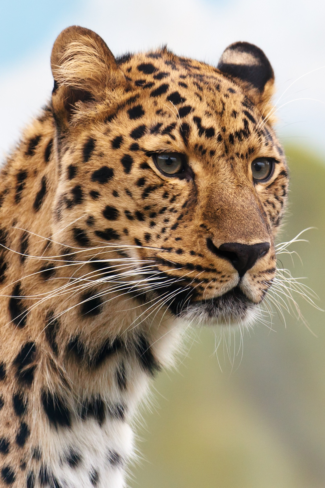
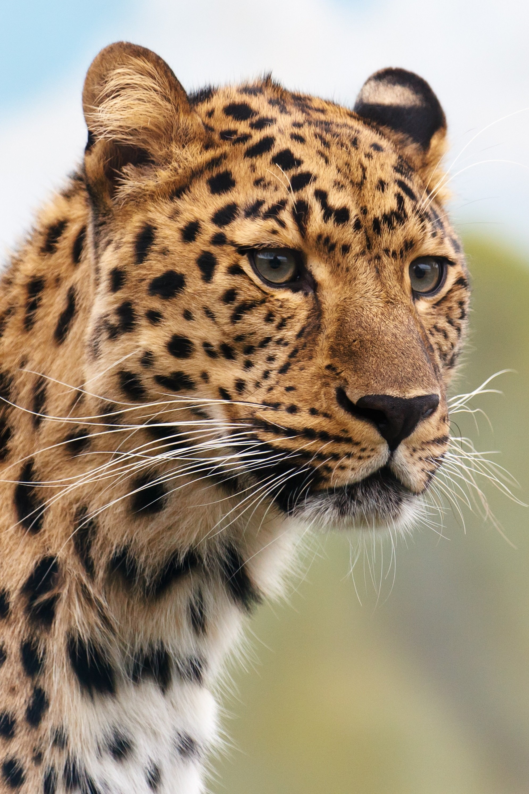
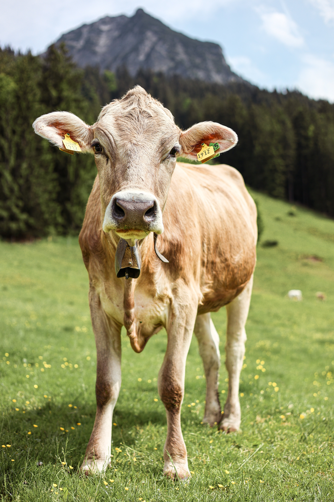
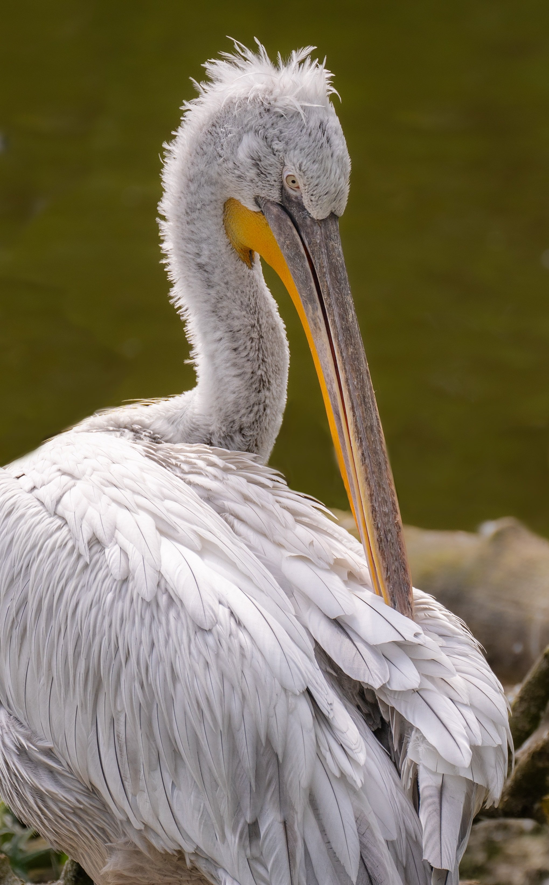
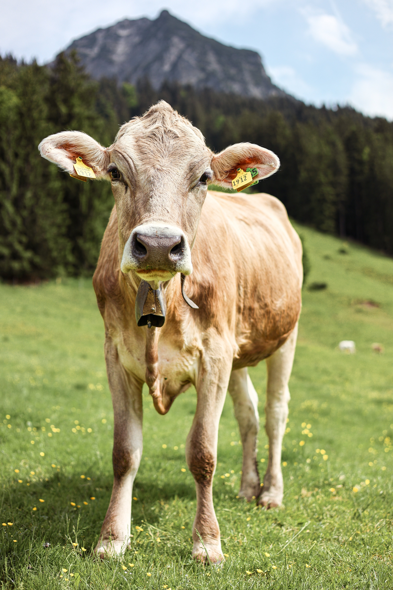
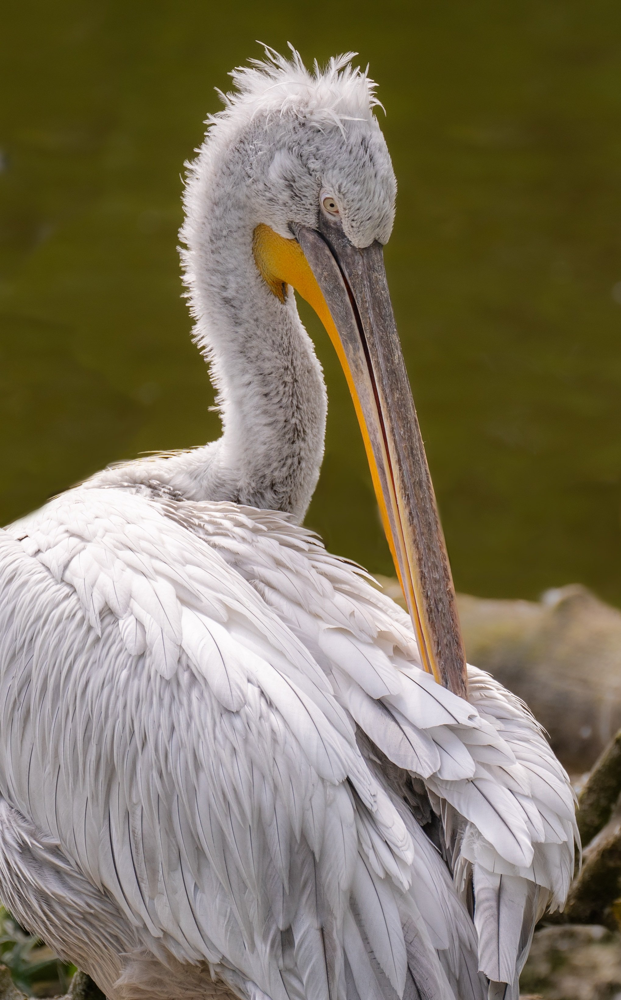

Wildlife photography “…combines knowledge of natural history, biodiversity, development, man-animal conflict, conservation policies, and so on.”
 

 




Storytelling photography is a powerful medium that goes beyond capturing beautiful images. It involves crafting a photo story that conveys a narrative, evokes emotions, and engages the viewer. Visual storytelling is important in today's fast-paced world to grab attention and create a lasting impact. Narrative photographers create images that transcend immediacy and resonate with a wider audience. Composition, lighting, and post-processing techniques play a crucial role in storytelling photography. By capturing emotions and using different angles, photographers can create impactful storytelling images. Exploring different genres and techniques can enhance visual storytelling. Storytelling photography has the ability to captivate and inspire, allowing photographers to express compelling stories through their images.